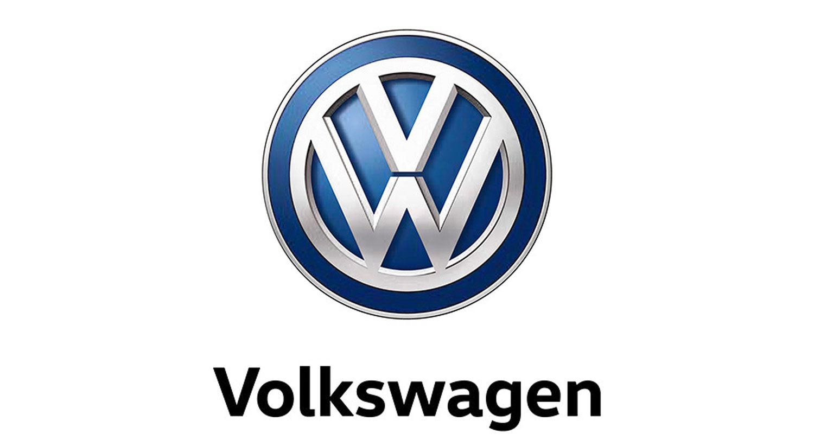
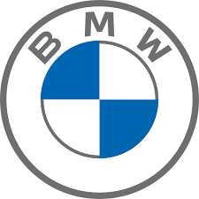
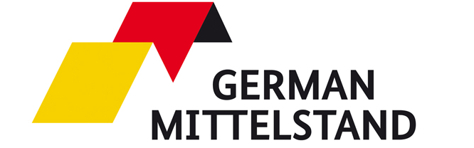
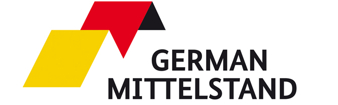

Economia
A Alemanha possui uma das economias mais fortes e desenvolvidas do mundo. O país se destaca especialmente pelos setores de automóveis, engenharia, maquinário industrial, química, farmacêutica e tecnologia. Grandes empresas como Volkswagen, BMW, Siemens e Bayer são referências internacionais e impulsionam o crescimento econômico.
Além da indústria, a Alemanha investe muito em pesquisa, inovação e sustentabilidade, sendo líder em energias renováveis e soluções verdes. O país também possui uma forte rede de pequenas e médias empresas, chamadas Mittelstand, que são fundamentais para a geração de empregos. Com altos níveis de exportação, mão de obra qualificada e uma infraestrutura eficiente, a economia alemã é reconhecida pela solidez, pela inovação e pelo papel central que ocupa no comércio mundial.
  
